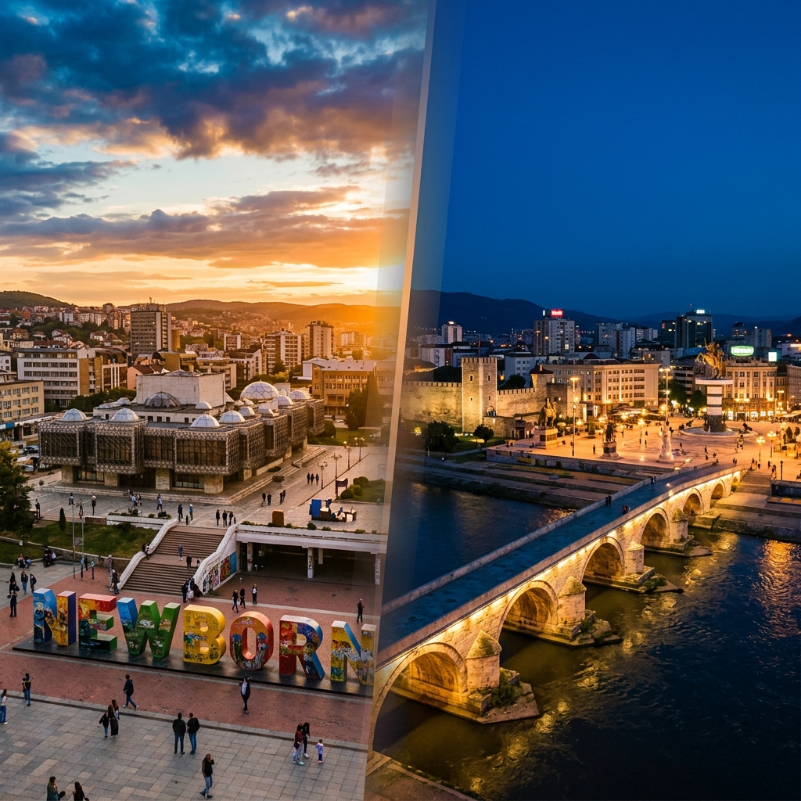
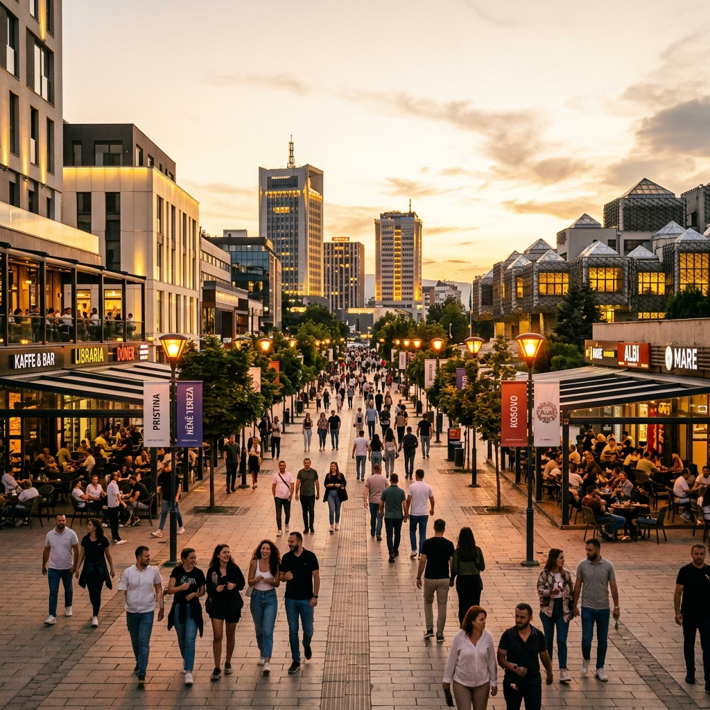
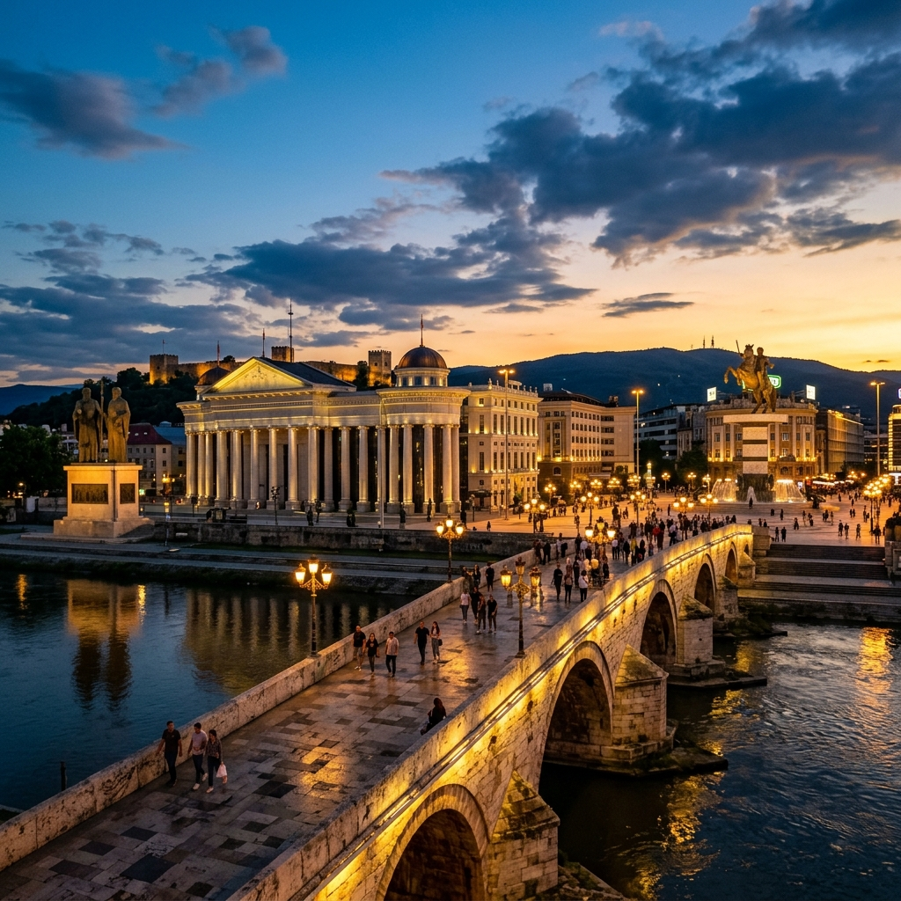
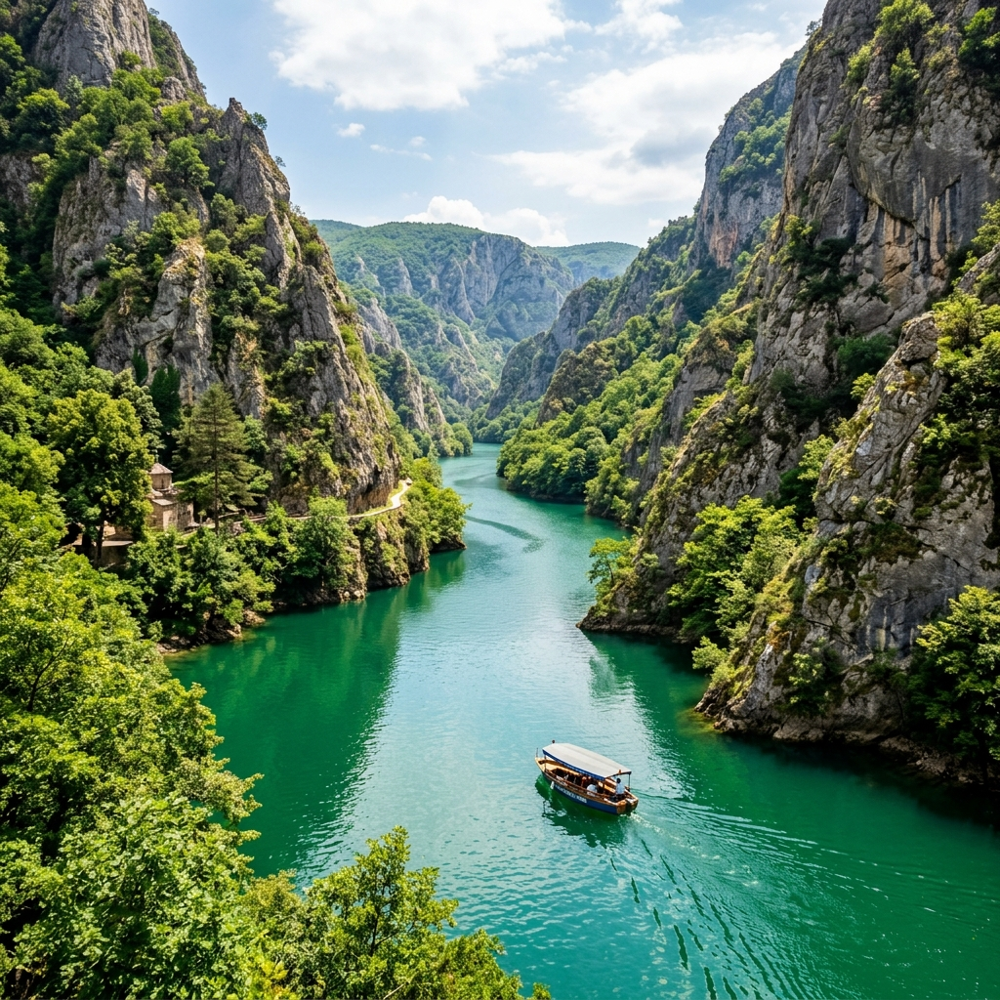
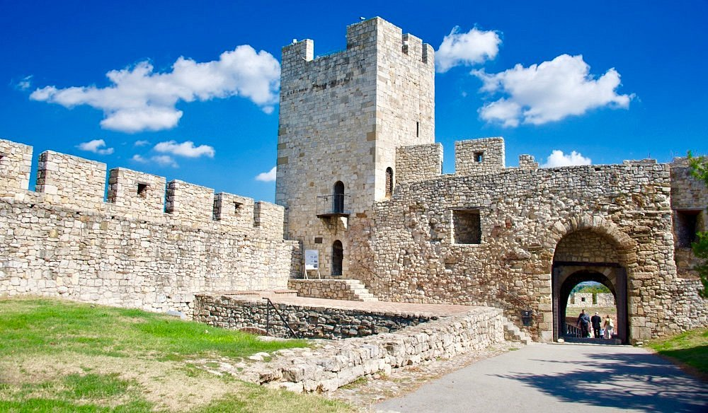

Estate 2026 · Kosovo & Macedonia del Nord
"Un viaggio insolito tra due capitali ricche di contrasti, caffè all'aperto e mercati storici. Solo 95 km in autobus, ma mondi totalmente diversi..."

Pristina: Newborn & Vitalità 🇽🇰
Appunti di viaggio
Pristina, la capitale più giovane d'Europa. Skopje, la metropoli macedone illuminata di marmo e storia. In mezzo, un bus di 95 chilometri e due mondi che non assomigliano a nulla che abbiate già visto.

Skopje: Luci e Ponti 🇲🇰
Giorno 1 · Pristina nel cuore 📍
"Kosovo! Il paese più giovane d'Europa"
Esplorazione culturale e viaggio serale per Skopje
🏳️ Pristina → 🇲🇰 SkopjeLa Biblioteca, la Cattedrale e il Cristo Salvatore.
I simboli della rinascita e lo struscio sul viale pedonale.
Il fascino ottomano e lo splendido complesso di Emin Gjiku.
Qebapa, pane fresco e ottima birra locale Peja.
"Pristina è una capitale giovane e sorprendente: in poche ore cammineremo tra moschee ottomane, cattedrali cattoliche e bizzarre biblioteche, prima di prendere il bus per Skopje."
🚌 Il collegamento
Piazza Macedonia, memoriali e storia della città
🇲🇰 Skopje, Macedonia del NordSpostamento in bus verso la Macedonia e check-in alloggio.
Il cuore pulsante e monumentale della Skopje moderna.
La casa di Madre Teresa e la vecchia stazione monumentale.
Figure in cera e dipinti epici sull'indipendenza.
Musica folk, spiedini e fumi delle griglie locali.
"Skopje illuminata di notte è uno spettacolo: il ponte di pietra, il Museo Archeologico riflesso sul Vardar, le statue barocche di Piazza Macedonia. Una passeggiata serale è obbligatoria."
Piazza Macedonia & Vardar 🇲🇰
"Ponte di pietra e Vardar!"

Il maestoso Canyon Matka 🛶
"Acqua smeraldo a 30 minuti!"
Natura incontaminata, viste panoramiche e avventure acquatiche
🇲🇰 Skopje, Macedonia del NordSalita sul monte Vodno in funivia per una vista spettacolare.
Relax e cucina tipica balcanica sulla terrazza del canyon.
Spettacolare lago tra pareti rocciose e giro in barca alle grotte.
Taglieri di formaggi locali e spiedini balcanici.
"Il Canyon Matka e la Millennium Cross offrono una fuga naturale rigenerante a pochi minuti dal centro cittadino. I contrasti della Macedonia non finiscono mai."
Il Bazar, bastioni medievali e luoghi di culto
🇲🇰 Skopje, Macedonia del NordLabirinto ottomano di botteghe artigiane, caravanserragli e tè.
L'iconostasi lignea di Saint Spas e la moschea ottomana.
Ćevapi alla brace e pane caldo nei vicoli della Čaršija.
Bastioni bizantini e la futuristica cattedrale di cupole.
Trasferimento in aeroporto e volo di rientro in Italia.

Giorno 4 · La Fortezza Kale 🏰
"L'ultimo sguardo prima del volo!"
Economia del viaggio
Per persona · 4 giorni · tutto incluso
PRISTINA & SKOPJE TRAVELERS
Data stima: Luglio 2026
--------------------------------
================================
Kosovo e Macedonia del Nord sono tra le destinazioni più economiche d'Europa. Con soli ~150€ a testa tutto incluso (voli, alloggio, cibo e trasporti) il rapporto qualità/prezzo è eccezionale.
Prima di partire